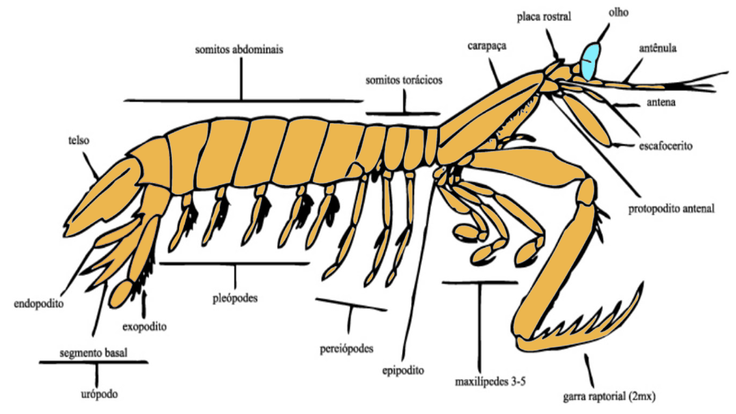
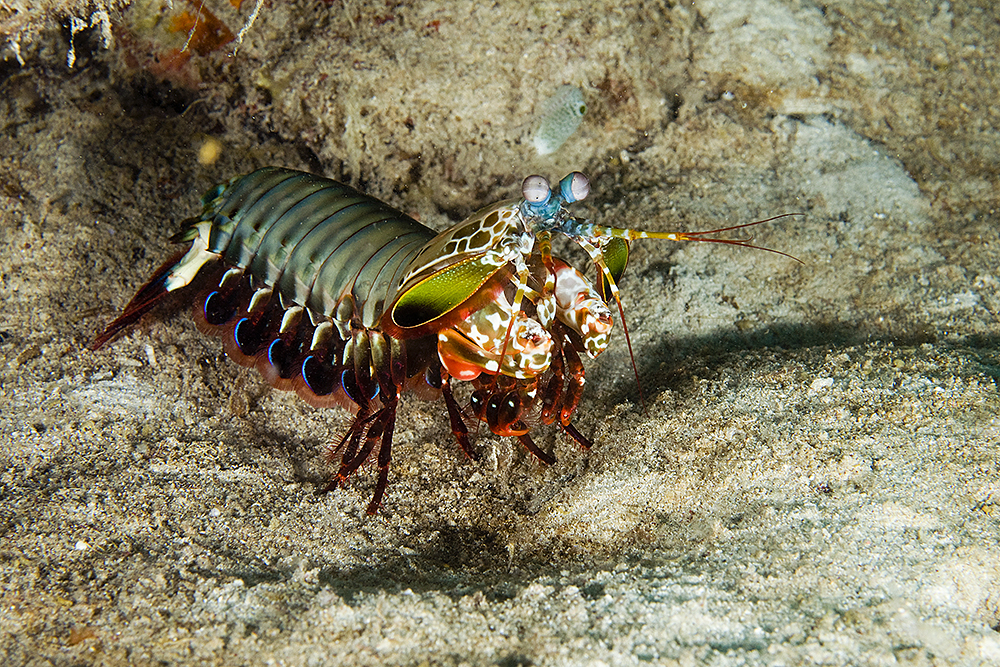
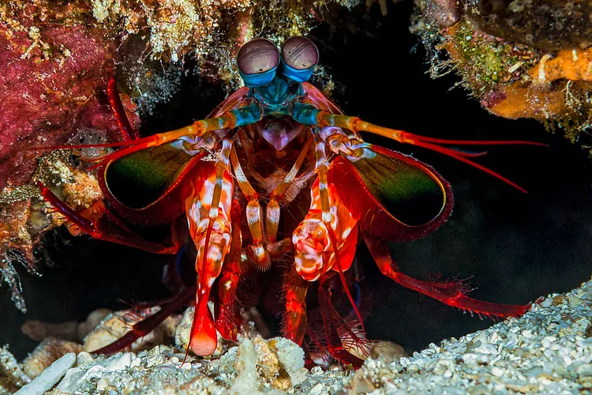
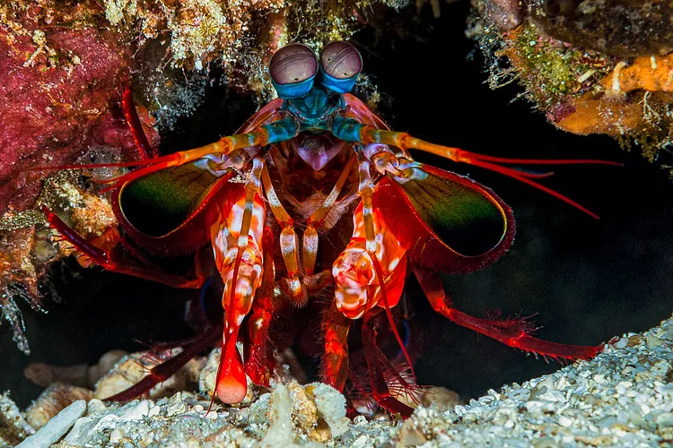

Fatos sobre o Stomatopoda

Mais Informações
Nome científico: Odontodactylus scyllarus
Reino: Animalia
Filo: Arthropoda
Subfilo: Crustacea
Classe: Malacostraca
Subclasse: Hoplocarida
Fatos e Curiosidades
Apelidos
tamarutacas; lacraia do mar;
lagosta-boxeadora; esquilas;
camarão-louva-a-deus-palhaço
Veja-o em ação
Força Esmagadora

As maiores esmagadoras, tais como exemplares de Odontodactylus scyllarus, são capazes de desferir um dos mais rápidos e violentos golpes do reino animal , um soco que pode apresentar a
velocidade de um tiro calibre .22 (equivalente a 720 km/h) e uma pressão de impacto de 600 N/cm².[3] Essa força esmagadora é a responsável pelo seu título de "lagosta-boxeadora" e é
capaz de facilmente quebrar a carapaça de um caranguejo, as conchas duras e calcificadas de gastrópodes ou até mesmo quebrar o vidro reforçado de um aquário.
Contato
Estomatópodes podem ser encontrados em quase todo o litoral brasileiro, mas não são animais fáceis de se observar pelos seus hábitos mais furtivos.
Devem ser manuseados com muita cautela pois são animais preparados para se defender com força, caso sejam incomodados.
 
